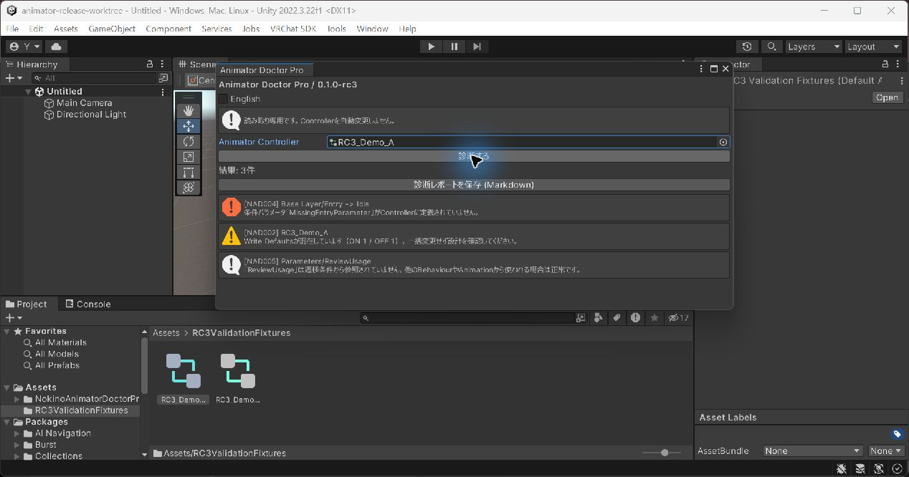

Animator Doctor Pro 1.0.0は、Unity上でAnimator Controllerを読み取り専用で点検するEditor拡張です。Layer・Write Defaults・遷移条件・Parameterなどの設定を確認候補として整理し、日本語・英語のMarkdownレポートに残せます。自動修復は行いません。
最新版の価格・販売状態・配布形式はBOOTHの商品ページで確認してください。以前の価格や先行版の案内は現行の販売条件を示しません。
English guide: free check, verified limits and BOOTH
自動修復はしません。検出0件でも正常動作やアップロード成功を保証しません。
Problem: An avatar animation or outfit state does not change as expected. In Unity, open the relevant Animator Controller, inspect a Transition's Conditions, and compare the parameter names (including capitalization) with the Controller's Parameters list. In our earlier RC3 synthetic Unity test, MissingEntryParameter was referenced by an Entry transition but was absent from the Controller Parameters. This is an example of what to investigate, not proof that a purchased avatar has the same problem.
Try free first: The manual Parameter-name comparison lets you paste names from Parameters and Conditions. It compares only the text you enter and does not open Unity assets, verify parameter types, or automatically diagnose Expressions Menu controls. See the genuine Unity RC3 test screenshot and limitations.
What the paid tool adds: Animator Doctor Pro 1.0.0 reads a selected Animator Controller and reports candidates such as duplicate layer names, mixed Write Defaults, transitions without destinations, undefined condition parameters, parameters not referenced in transition conditions (informational), and non-Base Layer Default Weight 0. It supports Japanese/English UI and Markdown reports. It does not automatically fix Controllers and does not inspect the full Expressions Menu setup.
Compatibility and purchase fit: Reported verification: Windows, Unity 2022.3.22f1, VRChat SDK Avatars 3.10.5, with and without Modular Avatar 1.18.7. Other Unity/SDK versions and individual commercial avatar setups are not guaranteed. The RC3 test screenshot is not proof that the current downloadable ZIP is identical. Confirm the current price, package contents, license and limitations on BOOTH before purchasing.
名前の大小文字だけをまず確認したい場合は、既存の無料のParameter名手動照合から始められます。こちらは入力した文字列の照合であり、Unityファイルの自動診断ではありません。
| 確認すること | 現行の範囲 |
|---|---|
| 使用環境 | 検証済み：Windows / Unity 2022.3.22f1 / VRChat SDK Avatars 3.10.5 / Modular Avatar 1.18.7あり・なし。 |
| 対象 | 指定したAnimator Controller。アバター全体の動作保証ではありません。 |
| 自動変更 | Controllerの設定は自動で変更しません。レポート保存時は、指定した保存先にファイルを書き出します。 |
| 未検証 | 別Unity/SDK版や市販アバターとの組合せ。対応すると推測しないでください。 |
VRChat公式製品ではありません。VRChat SDK・アバター・テスト用Controllerは同梱されていません。
自動修復・あらゆる問題の網羅検出・未検証環境での確実な動作が購入条件なら、現時点の本商品はその条件を満たしません。
「遷移条件から未参照」のInfoは、未使用の証明ではありません。BehaviourやAnimation等から使われている可能性があるため、診断だけでParameterを削除しないでください。
「遷移条件で参照したParameterがControllerに見つからない」場合を、実際にUnity Editorで撮影した合成のテスト用Controllerで確認できます。市販アバターの不具合を再現した画像ではありません。

検証用Controller RC3_Demo_Aでは、条件側の MissingEntryParameter がControllerのParametersに存在しない候補と、Write DefaultsのON/OFF混在を報告しました。公開中の診断レポート例と無料・有料の機能差も確認できます。
無料で試す：ParametersとConditionsの名前を手動照合できます。有料版：Unity内で選択したControllerの確認候補を一覧化し、日英Markdownへ保存できます（自動修復なし）。購入判断は上の対応環境とBOOTHの最新の販売条件・価格を比較してください。
Layer・Write Defaults・遷移先・条件Parameterなどの確認候補を点検し、日本語・英語のMarkdownレポートとして保存できます。候補を元の設計と照合し、利用者が必要な修正を判断してください。自動修復や正常動作の保証はありません。
無料ページは、手で入力した名前を比較します。有料版1.0.0はUnity内でControllerを選び、同名Layer・Write Defaults混在・遷移先の不整合・未定義条件Parameter・遷移条件から未参照のParameter・非Base LayerのDefault Weight 0という6項目の候補を点検して、日英Markdownレポートを保存します。検出結果は問題の確定ではなく、自動修復もしません。
いいえ。1.0.0はAnimator Controllerを対象とするツールであり、Expressions MenuやExpression Parametersの全体診断は提供しません。Menu Controlの名前・型とController側のParameterを手動で比べる場合は、無料ガイドの確認順を参照してください。
正式版1.0.0の検証報告では、上記環境でUnity GUI表示・クリーン導入・EditModeテスト19件成功を確認しています。バッチモードはLicensing ClientのIPCエラー199で最新XMLを取得できていません。全市販アバターや別Unity・SDK環境での動作は未保証です。
公開商品説明では購入者本人の商用・依頼制作利用と改変を認めています。ツール本体を納品物へ含めたり、改変版を含め再配布・転売したりしないでください。商品ページまたは同梱ファイルの最新の利用条件を優先してください。
商品ページに案内されたBOOTHメッセージ窓口へ、Unity/SDK版・再現手順・期待結果と実結果を添えて連絡できます。個人情報や購入したアバター/SDKのファイル一式は送らず、公開可能な最小例で説明してください。未確認の応答時間や返金条件は約束しません。